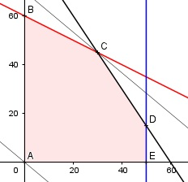

Aufgabe 94 2 Bauteile A und B werden an 3 Werkzeugmaschinen bei der Herstellung bearbeitet. In der Matrix sind die Bearbeitungszeiten pro Bauteil in Minuten dargestellt. A B Maschine 1 3 6 Maschine 2 6 4 Maschine 3 6 0 Maschine 1 und 2 stehen täglich höchstens 6 Stunden, Maschine 3 5 Stunden zur Verfügung. Bauteil A kann mit einem Gewinn von 10 €, Bauteil B zu einem von 12 € verkauft werden. Wie viele Bauteile A und B muss man täglich herstellen, um einen maximalen Gewinn G zu erzielen? Bedingungen: x = Anzahl Bauteil A y = Anzahl Bauteil B 6 h = 360 min 5 h = 300 min 3x + 6y ≤ 360 6x + 4y ≤ 360 6x ≤ 300 x ≥ 0 x ∈ ℕ y ≥ 0 y ∈ ℕ Zielfunktion: G = 10x + 12y Randgerade 1: 3x + 6y = 360 Randgerade 2: 6x + 4y = 360 Randgerade 3: 6x = 300

Die Eckpunkte A, B, C, D und E bilden das Planungsgebiet, das alle Ungleichungen erfüllt. Eckpunkt C ist der Schnittpunkt der Randgeraden 1 und 2: 3x + 6y = 360 (1) 6x + 4y = 360 (2) (1) * (-2) + (2): -6x - 12y = -720 6x + 4y = 360 ------------------- -8y = -360 |:(-8) y = 45 Eingesetzt in (1): 3x + 6 * 45 = 360 |-270 3x = 90 |:3 x = 30 C(30|45) Die Parallele zur Zielfunktion durch C liegt am höchsten --> Es müssen 30 Bauteile A und 45 Bauteile B gefertigt werden, dann ist der Gewinn G maximal. Gmax = 10 * 30 + 45 * 12 = 840 €